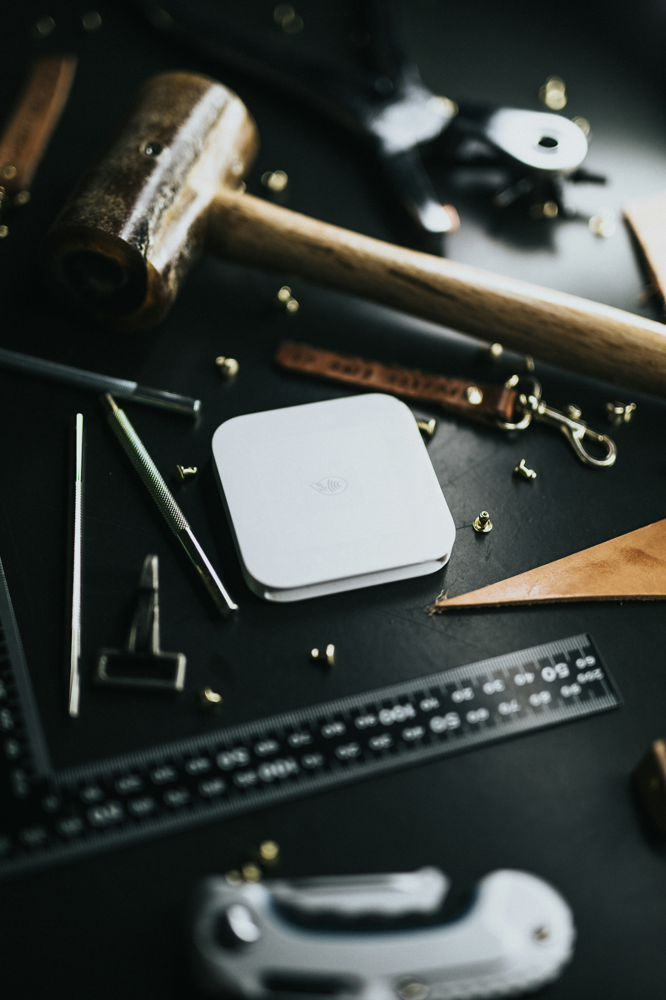

[ Adım 2: Görsel Mantığı ]

Resmi Yeni Sekmede Aç veya Resim Adresini Kopyala seçeneğini kullan. Görselin adındaki gizli seviye ismini yakala!
Not: Görsel adını bulduğunda adres çubuğundaki (URL) sayfa adını güncelleyerek ilerle.